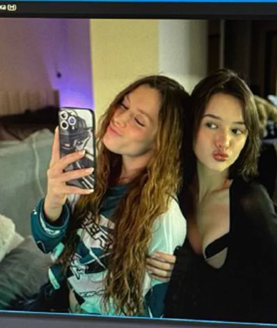
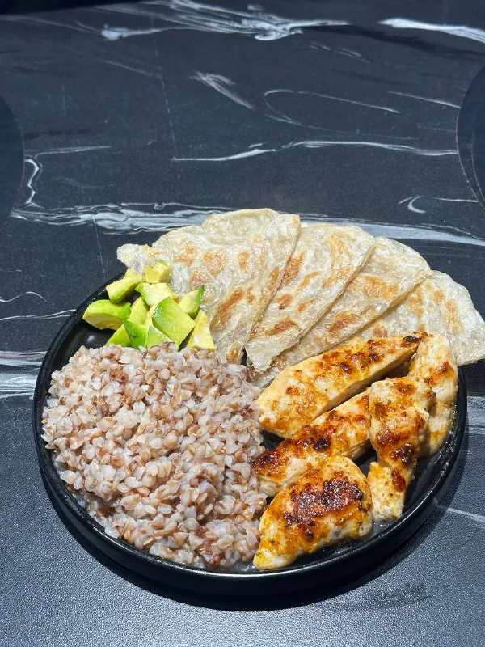

Кукинг у Полины — не рецепт, а шоу. Меню выбирает чат, на кухню приходят гости, и почти каждый раз что-то идёт не по плану. Чем закончится — узнаёте вместе со всеми.
Меню от чата
Гости на кухне
Отчёт после эфира
01 / Кухня
Как это устроено
Три шага до ужина.
«Только без чеснока, молю»— пожелание из чата
01 / ЧТО ГОТОВИМ?
Меню выбирает чат.
Перед кукингом Полина запускает «аук на еду»: зрители голосуют, что будет на ужин, — ещё до того, как дело доходит до плиты.

02 / КТО НА КУХНЕ?
Готовят компанией.
«Люся приехала!» — и сразу кукинг по меню от чата. В гостях бывают и Даня, и стримеры из её нарезок: Ekatze, Mabelend, Fasoollka, Enzzai.

03 / ЧТО ПОЛУЧИЛОСЬ?
Отчёт после эфира.
«Отчёт по кукингу! Кушаем» — и это был 34-й час стрима, а впереди ещё минимум 15.
Вместе со стримерами
Готовят не в одиночку.
Лучшие моменты из её нарезок — что бывает, когда на кухне несколько стримеров сразу.
Коротко
Секунды с кухни.
Шортсы с её канала: вертикальные моменты по несколько секунд.